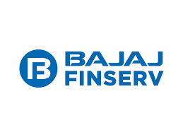

|
Hello, I'm Datta Sai, a graduate student pursuing a Master's degree in Computer Science at the University of North
Carolina Charlotte now. With a strong foundation in technology and a passion for
computers, I'm on a journey to build a promising career.
My professional journey began with internships at esteemed organizations. I honed my skills as part
of the Web Business and Group Marketing (MarTech) team at Bajaj Finserv , where I gained valuable insights
into the dynamic world of web technologies and marketing strategies. Prior to that, I had the
privilege of working at FarmOR Agri Solutions and
Hyposoft Global Solutions where I was actively
engaged in innovative projects. These experiences were enriching both personally and professionally.
They provided me with the opportunity to learn and grow while contributing to the growth and success
of these esteemed organizations.
I hold a Bachelor's degree from Vellore Institute of Technology with a specialization in Computer
Science, which I completed in August 2023. My academic journey has provided me with a strong
technical background and a passion for solving complex problems.
I have experience in a variety of programming languages and frameworks.
- Programming Languages: Python, C, C++, Java, HTML, CSS, JavaScript, Typescript
- Frameworks and Libraries: Node.js, Angular, React, Express,JUnit, Swagger, PyTorch,
OpenCV, Keras, Tensorflow
- Databases & Data Management: Mongodb, MySQL, Redis
- Cloud Platforms and Tools: AWS, Azure, Bitbucket, Kafka, RabbitMQ, Jira, Jenkins,
Kubernetes
- Relevant courses: Problem Solving and Programming, Problem Solving and Object Oriented
Programming, Database Management Systems, Network and Communication, Data Structures and
Algorithms, Software Engineering, Internet and Web Programming, Operating Systems, Parallel and
Distributed Computing, Artificial Intelligence, Large Scale Data Processing, Web Mining, Machine
Learning, Natural Language Processing, Data Visualization, Image Processing, Information Security
Analysis and Audit, Information Security Management, Lean Start-up Management
As I embark on my career journey, I am actively seeking summer internship opportunities in
software
engineering for the year 2024. If you have a position available or simply want to connect, please
feel free to reach out to me via email at vlingam1@uncc.edu.
Thank you for visiting my website, and I look forward to connecting with you.
CV |
Github |
Linkdin
|
|
|

|
Bajaj Finserv
BYTE Intern
Pune, Maharastra, India · Jan 2023 - Jun 2023
- Spearheaded a POC by transforming a monolithic application to a modern, scalable Kubernetes based microservices thereby achieving a 40%
scalability boost
- Built Node.js backend services with TypeScript, prioritizing performance, code quality, and scalability.Employed JUnit for unit testing and Swagger for code documentation
- Engineered performant solutions with Azure App Functions and Azure Cosmos NoSQL, emphasizing scalability, independence, ensuring the technology stack is aligned with business needs
- Acquired and applied fundamental skills in Adobe Experience Manager, contributing to the enhancement of the website
- Collaborated with cross-functional teams, to translate business requirements into technical solutions thereby fostering open communication aligned with organizational goals
- Contributed to integrate AI in the development process by utilizing tools such as ChatGPT and GitHub Copilot to streamline development, reduce time-to-market and enhance code quality
Technologies: MERN Stack, MySQL, Redis, AEM(CQ5), Bitbucket, AWS(S3,EC2, SQS,Lambda functions), Azure, Jenkins, Kafka, RabbitMQ, Kubernetes
|
|
|
|
FarmOR Agri Solutions
Full Stack Development Intern
Hyderabad, Telangana India · June 2019 - July 2019
- Orchestrated MEAN stack development for FarmOR partner app, FarmOR Kisaan app and admin panels (seller central)
- Strengthened security by 30% through Angular authentication, GIT and NPM scripts by crafting custom directives and decorators
- Elevated user engagement by 15% with MongoDB, Passport and ensuring seamless cross-browser (Mozilla, Chrome) experience
Technologies: Mongodb, Angular, Express, Node.js, AWS, Jira
|
|
|
|
Hyposoft Global Solutions
Backend Development Intern
Hyderabad, Telangana, India · May 2018 - July 2018
- Developed performant REST APIs utilizing Node.js boosting app speed by 25% which ensured smooth server-user data flow
- Collaborated on front-end integration and maintained proper documentation which accelerated business processes by 20%
- Slashed bugs by 15% through Bitbucket version control and rigorous Postman testing for strong backend services
Technologies: Node.js, HTML, CSS
|
|

|
University of North Carolina, Charlotte
Masters in Computer Science
Charlotte, NC · 2023 - 2025
|
|
|
|
Vellore Institute of Technology
B.Tech in Computer Science & Engineering · 7.95 / 10.0
Chennai, India · 2019 - 2023
|
|
Food Recognition and Calorie Measurement
- Developed a react application hosted on Amplify which recommends recipes to users
based on items present in pantry
- Utilized AWS Cognito for user authentication, AWS Sage Maker to train recipe data
and recommend recipes, Lambda functions to get ingredients and get recipes, DynamoDB
to store user data, SQS to achieve scalability, SES to notify users about
ingredients which are about to expire, API Gateway, OpenSearch
Technologies: Python, AWS, Pytorch, React, HTML5, CSS, YAML
|
|
Driver Drowsiness Detection
- Implemented a restaurant recommendation chatbot by using 7000+ restaurant data
across different cuisines using Yelp API
- Analyzed and developed serverless and microservice driven web application to
improve customer outreach by 95%
- Deployed the chatbot website on AWS S3 bucket, and utilized REST service
interface, API Gateway with Swagger, DynamoDB, Lambda, Elasticsearch achieving
scalability and efficiency of 80%
Technologies: Java, AWS, JavaScript, HTML5, CSS, YAML
|
|
Implementation of Basic Shell Interpreter
- Modeled the data for University Management System and deployed the database on
PostgreSQL
- Implemented a web based portal for the University Management System using python
libraries streamlit and psycopg2 and connected it to PostgreSQL
Technologies: Python, PostgreSQL, Streamlit, Psycopg2
|
|
Pacman Game
- Implemented a prototype which classifies a relevant recipe as dessert and studied
the features contributing to it and analyzed the performance against existing
Machine Learning Algorithms (KNN, Support Vector Classifier, Gradient Descent,
Logistic Regression)
- Expedited optimization and analysis of different ML algorithms thereby achieving
95% performance
- Enhanced features of the dataset resulting in 85% customer user experience by
integrating the system with tableau dashboard
Technologies: Python, Pandas, Grid Search CV, Tableau
|
|
Thanks to Jon Barron for the
nice template!
|